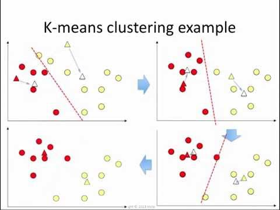

Liczba klastrów:
Wybierz zdjęcie:

Aplikacja
Aplikacja zbudowana w języku java script zaprezentowana na tej stronie
realizuje metodę k-means dla kilku przykładowych zdjęć. Wybrane zdjęcie
dzielone jest na grupy na podstawie wartości RGB pixeli. W efekcie
sklastrowane zdjęcie przedstawia ten sam skomresowany obraz wyrażony
przez liczbę kolorów odpowiadającą liczbie klastrów.
KLASTROWANIE
Klastrowanie czyli analiza skupień jest metodą tzw. klasyfikacji bez nadzoru.
Jest to metoda dokonująca grupowania elementów we względnie jednorodne klasy.
Podstawą grupowania w większości algorytmów jest podobieństwo pomiędzy
elementami – wyrażone przy pomocy funkcji podobieństwa.
Celem klastryzacji jest znalezienie poprzez grupowanie dyskretnej struktury danych,
oraz dokonanie ich uogólniania. Grupowanie polega na wyodrębnianiu grup (klas, podzbiorów).
Klastryzacja danych jest bardzo szeroko stosowana ze względu na swój fundamentalny charakter.
Umożliwia pogrupowania zbioru danych względem preferowanych przez nas cech, co daje sposobność
dalszej dopasowanej analizy.
ZASTOSOWANIA
- medycyna: grupowania chorób, grupowanie objaw
- text mining: grupowanie podobnych dokumentów
- data mining: podział klientów na pewne podgrupy
- wyszukiwanie informacji: grupowanie wyników z wyszukiwarek
- segmentacja obrazu:
podział obrazu na regiony homogeniczne pod względem pewnej własności obrazu (kolor, tekstura, intensywność)
- grupowanie zadań w problemie harmonogramowania
METODA K-CENTROIDÓW
(k-means, MacQueen, 1967)
Danych jest N punktów: x1, x2, ..., xN w przestrzeni Rn, oraz parametr k, określający liczbe poszukiwanych klastrów.Szukamy k punktów c1, ..., ck zwanych środkami lub centroidami, będących optymalnymi punktami ze względu na funkcję:
| F(c1, ..., ck) = | N | minj=1..k d(xi, cj) |
| Σ | ||
| i=1 |
- d(xi,cj), jest funkcją odległości punktu xi od centroidu cj
ALGORYTM
Znaleźć k środków tak, aby suma odległości punktów do najbliższego centroida była minimalna.- 1. Wybierz losowo dowolnych k centrum klastrów
- 2. Przydziel każdy obiekt do najbliższego centroida.
- 3. Wyznacz nowy układ centroidów
- 4. Powtórz krok 2 dopóty, poprawa jakości będzie mała, lub osiągniesz limit iteracji.

Wyznaczanie nowego układu centroidów
Nowy centroid jest środkiem ciężkości powstającego (w poprzednim przebiegu algorytmu) klastra.Współrzędne nowego centroida:
| c(xi) = | p1(xi) + ... + pb(xi) |
| b |
- p1, p2, ..., pb - punkty należące do klastra.
- c(xi), p1(xi), ..., pb(xi)– i-ta współrzędna.